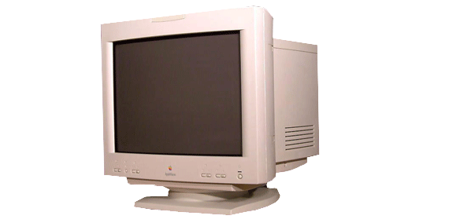
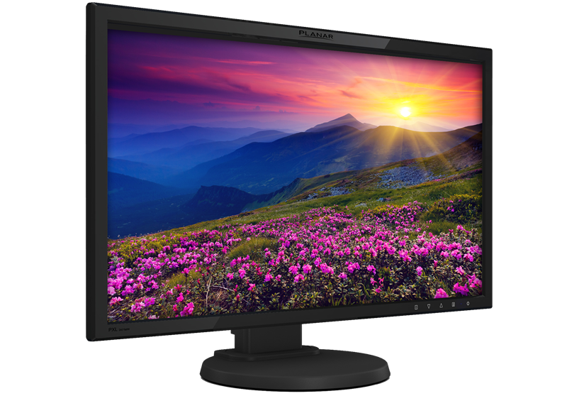
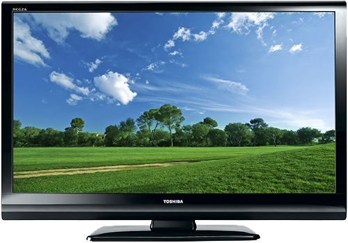
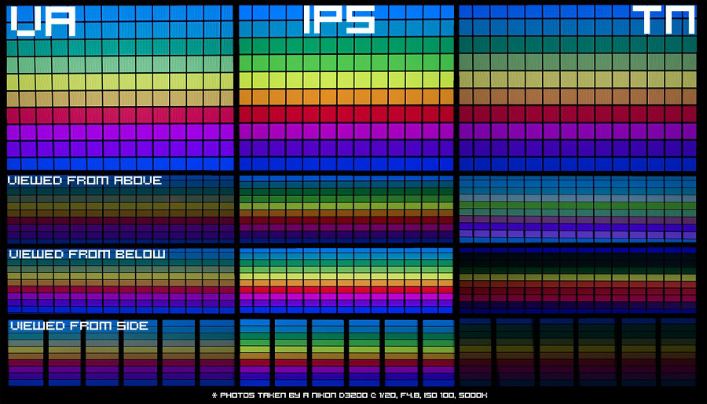

Tipos de Pantalla
Tipos de pantalla según su tecnología para formar imágenes.
Podemos encontrar varios tipos de pantallas, que cambian su forma de iluminar los píxeles y direccionamientos con las diferentes tecnologías en los paneles de cristal.

CRT (Cathode Ray Tube)

LCD (Liquid Crystal Display)

PDP (Plasma Display Panel)

LED (Light Emitting Diode)
Tipos de Paneles
Las pantallas LCD tienen un tipo de panel que determina como se verán los colores, desde que ángulos será visible, la tasa de refresco de cada píxel y la tecnología de matriz activa.
Paneles TN(Twisted Nematic)
Los paneles TN son conocidos por su tecnología de matriz la cual les permite llegar a altas tasas de refresco como 240Hz y a su corto ángulo de visión de unos 90º. Estos paneles son menos costosos y son muy utilizados en portátiles por su bajo consumo y en monitores Gaming por su alta tasa de refresco, ideal para FPS(First Person Shooter).
Paneles VA(Vertical Aligment)
Los paneles VA son un punto intermedio entre los paneles TN y los IPS, estos tienen los paneles de cristal mucho más cerca unos de otros lo que hace que apenas haya fugas de luz, por eso la calidad de imagen es mayor. Sin embargo, el tiempo de respuesta es algo mayor que en un panel TN, ya que los cristales tienen menos espacio para moverse y reaccionar a la luz.
Paneles IPS(In-Plane Switching)
Los paneles IPS son muy conocidos por su mejora de color y ángulo de visión de 178º , son paneles con tecnología de matriz parecía a las del VA, estos paneles ofrecen unos colores más vivos pero a su vez bajan la tasa de refresco. Estos paneles son más costosos y consumen más pero si se busca unos colores más vivos y mejor perspectiva desde cualquier lado del sofá es ideal para Televisores y monitores enfocados a juegos de ROL, estas pantallas también pueden llegar a alcanzar altas tasas de refresco pero proporcional a su precio.
